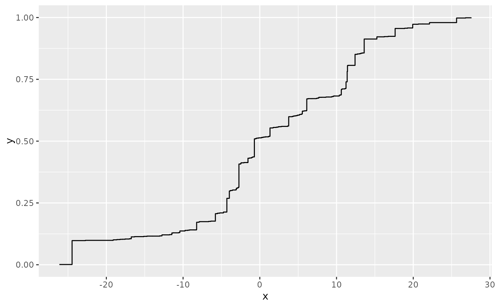
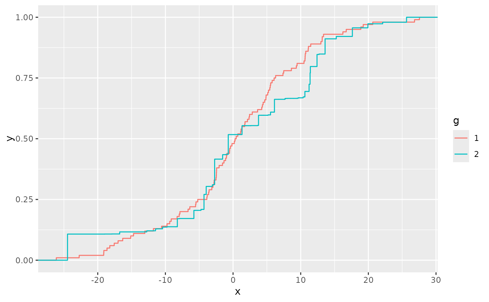
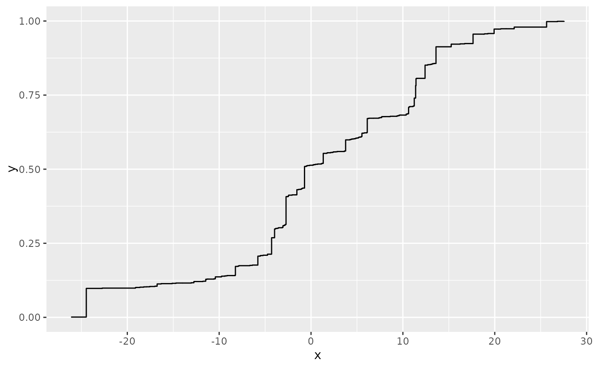
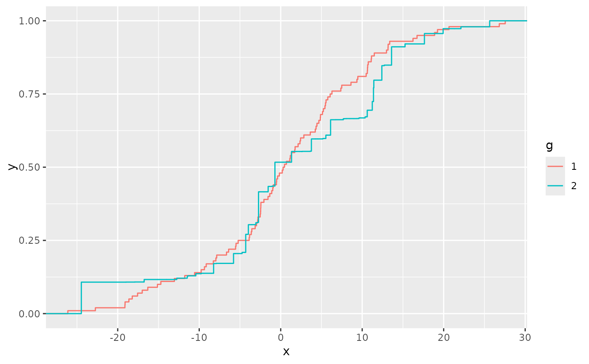

Version of ggplot2::stat_ecdf that adds a weights property for each
observation, to produce an empirical weighted cumulative distribution function.
The empirical cumulative distribution function (ECDF) provides an alternative
visualisation of distribution. Compared to other visualisations that rely on
density (like geom_histogram()), the ECDF doesn't require any
tuning parameters and handles both continuous and discrete variables.
The downside is that it requires more training to accurately interpret,
and the underlying visual tasks are somewhat more challenging.
stat_ewcdf(
mapping = NULL,
data = NULL,
geom = "step",
position = "identity",
...,
n = NULL,
pad = TRUE,
na.rm = FALSE,
show.legend = NA,
inherit.aes = TRUE
)Arguments
- n
if NULL, do not interpolate. If not NULL, this is the number of points to interpolate with.
- pad
If
TRUE, pad the ecdf with additional points (-Inf, 0) and (Inf, 1)- na.rm
If
FALSE(the default), removes missing values with a warning. IfTRUEsilently removes missing values.
Computed variables
- x
x in data
- y
cumulative density corresponding x
See also
wquantile
Examples
library(ggplot2)
n <- 100
df <- data.frame(
x = c(rnorm(n, 0, 10), rnorm(n, 0, 10)),
g = gl(2, n),
w = c(rep(1/n, n), sort(runif(n))^sqrt(n))
)
ggplot(df, aes(x, weights = w)) + stat_ewcdf(geom = "step")
 # Don't go to positive/negative infinity
ggplot(df, aes(x, weights = w)) + stat_ewcdf(geom = "step", pad = FALSE)

# Multiple ECDFs
ggplot(df, aes(x, colour = g, weights = w)) + stat_ewcdf()

ggplot(df, aes(x, colour = g, weights = w)) +
stat_ewcdf() +
facet_wrap(vars(g), ncol = 1)
# Don't go to positive/negative infinity
ggplot(df, aes(x, weights = w)) + stat_ewcdf(geom = "step", pad = FALSE)

# Multiple ECDFs
ggplot(df, aes(x, colour = g, weights = w)) + stat_ewcdf()

ggplot(df, aes(x, colour = g, weights = w)) +
stat_ewcdf() +
facet_wrap(vars(g), ncol = 1)